Focusing the GWAS Lens on days to flower using latent variable phenotypes derived from global multi-environment trials
The Plant Genome. (2022) e20269.
which is follow-up to:
AGILE Project

Collaborators
- Department of Plant Sciences and Crop Development Centre, University of Saskatchewan, Saskatoon, Saskatchewan, Canada
- UTAZ
Sponsors
- Saskatchewan Pulse Growers Association
- Western Grains Research Foundation
- GenomePrairie
- GenomeCanada
- Saskatchewan Ministry of Agriculture
Figures
Figure 1
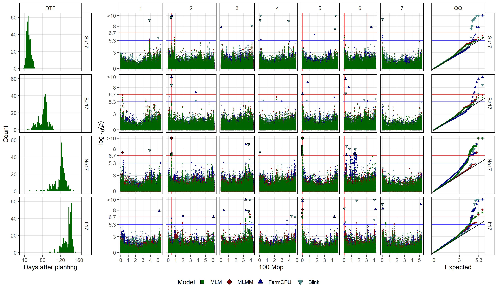
Figure 1: Genome-wide association results for days from sowing to flower (DTF) in Sutherland, Canada 2017 (Su17), Jessore, Bangladesh 2017 (Ba17), Bardiya, Nepal 2017 (Ne17) and Metaponto, Italy 2017 (It17) for a lentil diversity panel. (a) Histograms of DTF. (b) Manhattan and QQ plots for GWAS results using MLM, MLMM, FarmCPU and Blink models. Vertical lines represent specific base pair locations to facilitate comparisons across traits.
Figure 2
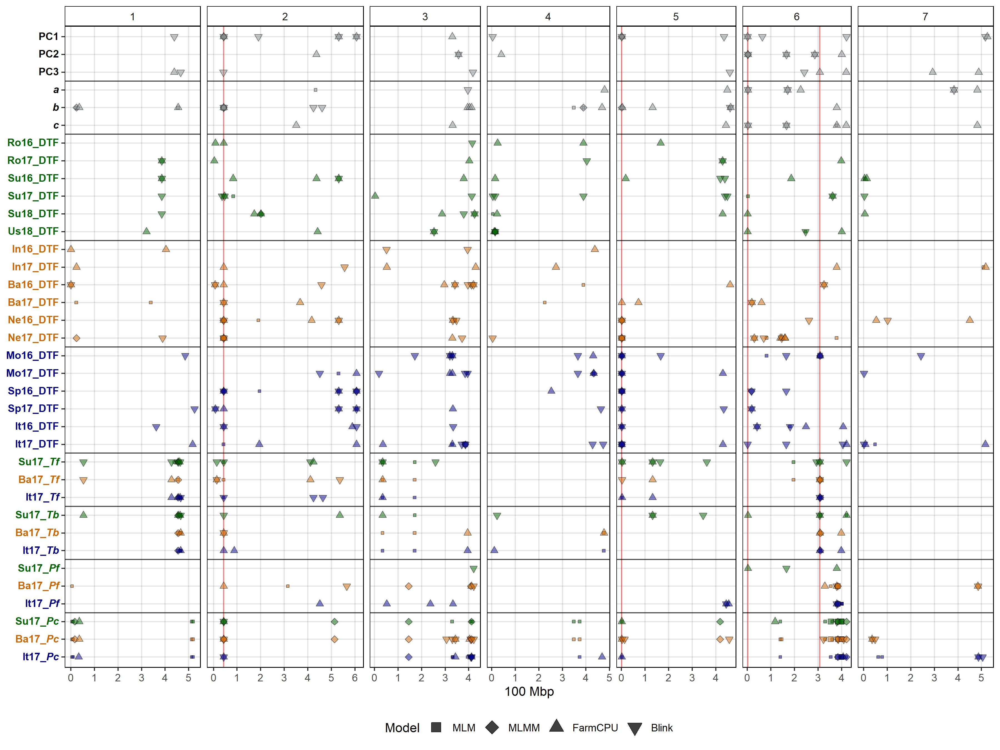
Figure 2: Summary of genome-wide association results using MLM, MLMM, FarmCPU and Blink models on single environment and multi-environment traits related to days from sowing to flower (DTF) in a lentil diversity panel. Larger points represent a significant association (-log10(p) > 6.7) with a trait of interest under one of the GWAS models, while smaller points represent a suggestive association (-log10(p) > 5.3). PC1, PC2, PC3, represent the first three principal components of an analysis of 18 site-years of DTF data (Wright et al., 2020) in Rosthern, Canada 2016 and 2017 (Ro16 and Ro17), Sutherland, Canada 2016, 2017 and 2018 (Su16, Su17 and Su18), Central Ferry, USA 2018 (Us18), Bhopal, India 2016 and 2017 (In16 and In17), Jessore, Bangladesh 2016 and 2017 (Ba16 and Ba17), Bardiya, Nepal 2016 and 2017 (Ne16 and Ne17), Marchouch, Morocco 2016 and 2017 (Mo16 and Mo17), Cordoba, Spain (Sp16 and Sp17), Metaponto, Italy 2016 and 2017 (It16 and It17). a, b and c are coefficients from a photothermal model (Wright et al., 2020) and used to calculate the nominal base temperature (Tb), nominal base photoperiod (Pc), thermal sum required for flowering (Tf) and the photoperiod sum required for flowering (Pf). Colors are representative of macroenvironments: Temperate (green), South Asian (orange) Mediterranean (blue) and multi-environment traits (grey). Vertical lines represent specific base pair locations to facilitate comparisons across traits.
Figure 3

Figure 3: Genome-wide association results for the first three principal components (PC1, PC2 and PC3) the b and c coefficients from the photothermal model developed by Wright et al., (2020), and the nominal base temperature (Tb) in Sutherland, Canada 2017 (Su17) for a lentil diversity panel. (a) Histograms of each trait, scaled from 0 to 1. (b) Manhattan and QQ plots for GWAS results using MLM, MLMM, FarmCPU and Blink models. Vertical lines represent specific base pair locations to facilitate comparisons across traits.
Figure 4

Figure 4: Genome-wide association results for days from sowing to flower (DTF) with and without covariates for a lentil diversity panel. Manhattan and QQ plots for DTF in (a) Rosthern, Canada 2017 (Ro17) and (b) Cordoba, Spain 2017 (Sp17), using MLM, MLMM, FarmCPU and Blink models. The middle panel shows GWAS results without a covariate, while the top and bottom panel show GWAS results using the c and b (temperature and photoperiod) coefficients from the photothermal model developed by Wright et al. 2020, respectively. Vertical lines represent specific base pair locations to facilitate comparisons across traits.
Figure 5
Additional/Figure_05_a_plotly.html Additional/Figure_05_b_plotly.html Additional/Figure_05_c_plotly.html
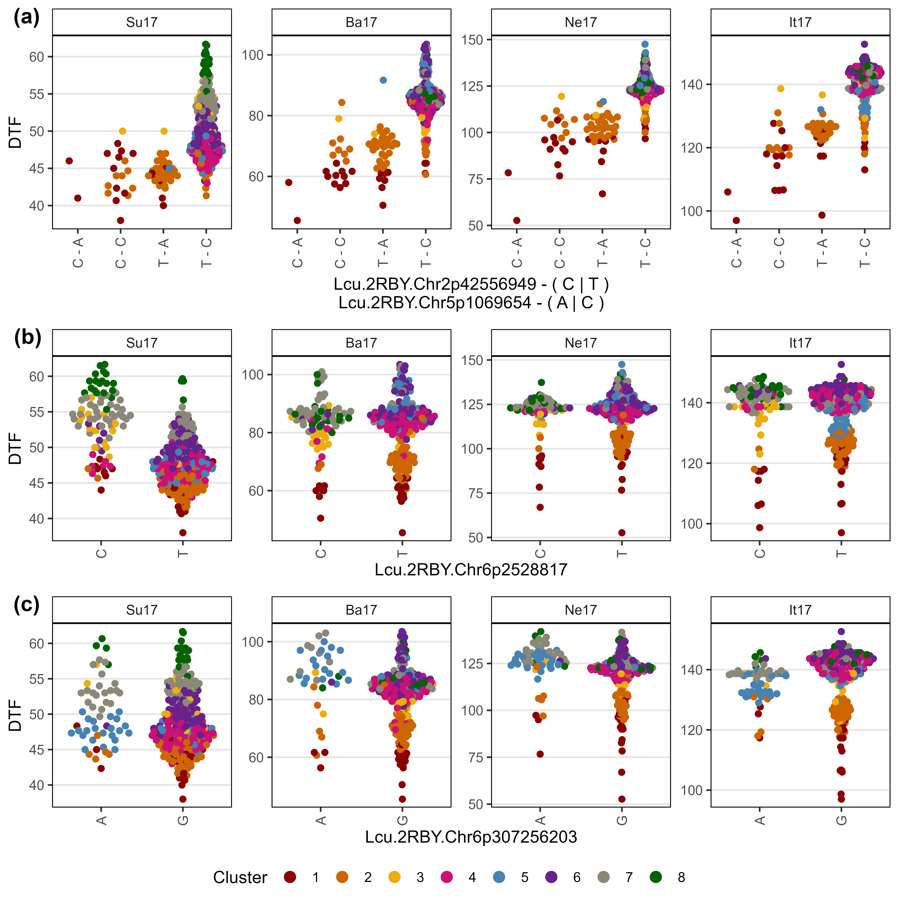
Figure 5: Allelic effects of selected markers on days from sowing to flower (DTF) across contrasting locations in a lentil diversity panel. Sutherland, Canada 2017 (Su17), Jessore, Bangladesh 2017 (Ba17), Bardiya, Nepal 2017 (Ne17) and Metaponto, Italy 2017 (It17). Colors are based on a hierarchical clustering of principal components done by Wright et al. (2020) using 18 site-years of DTF data across the three major lentil growing macroenvironments. (a), (b) and (c) correspond to SNPs at the vertical lines on Figures 1, 2, 3 & 4.
Supplemental Tables
Supplemental Table 1
Supplemental Table 1: GWAS results for SNPs significantly associated with the traits of interest used in this study. Traits include days from sowing to flower (DTF), the first three principal components from a principal component analysis (PCA) of the DTF data (PC1, PC2, PC3), the a, b and c coefficients from a photothermal model (PTModel), the nominal base temperature (Tb), nominal base photoperiod (Pc), thermal sum required for flowering (Tf) and the photoperiod sum required for flowering (Pf). Rosthern, Canada 2016 and 2017 (Ro16 and Ro17), Sutherland, Canada 2016, 2017 and 2018 (Su16, Su17 and Su18), Central Ferry, USA 2018 (Us18), Bhopal, India 2016 and 2017 (In16 and In17), Jessore, Bangladesh 2016 and 2017 (Ba16 and Ba17), Bardiya, Nepal 2016 and 2017 (Ne16 and Ne17), Marchouch, Morocco 2016 and 2017 (Mo16 and Mo17), Cordoba, Spain (Sp16 and Sp17), Metaponto, Italy 2016 and 2017 (It16 and It17). For further details see Wright et al. (2020). Traits run with the b or c coefficients as a covariate are indicated with the “-b” and “-c” suffix in the trait column.
Supplemental Table 2
Supplemental Table 2: List of genes in the regions associated with flowering time in lentils chromosomes 2 and 5, and the syntenic regions of chickpea (Cicer arietinum) and Medicago truncatula.
Supplemental Figures
Supplemental Figure 1
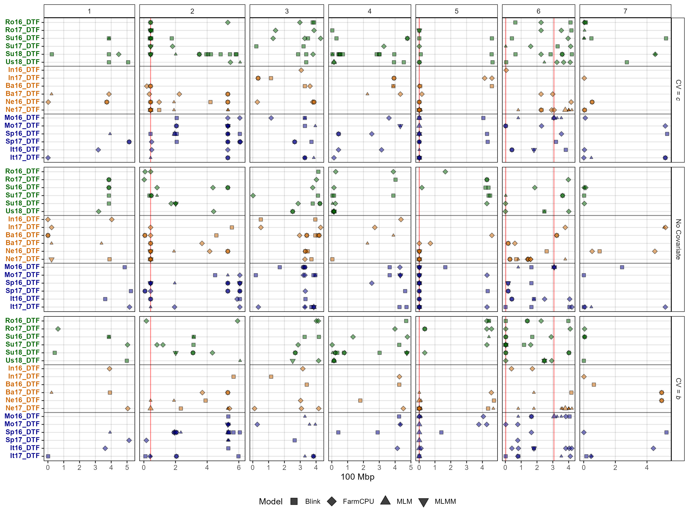
Supplemental Figure 1: Summary of genome-wide association results using MLM, MLMM, FarmCPU and Blink models on days from sowing to flower (DTF) in a lentil diversity panel using no covariates or with the either the b or c coefficient as a covariate. Larger points represent a significant association (-log10(p) > 6.7) with a trait of interest under one of the GWAS models, while smaller points represent a suggestive association (-log10(p) > 5.3). Rosthern, Canada 2016 and 2017 (Ro16 and Ro17), Sutherland, Canada 2016, 2017 and 2018 (Su16, Su17 and Su18), Central Ferry, USA 2018 (Us18), Bhopal, India 2016 and 2017 (In16 and In17), Jessore, Bangladesh 2016 and 2017 (Ba16 and Ba17), Bardiya, Nepal 2016 and 2017 (Ne16 and Ne17), Marchouch, Morocco 2016 and 2017 (Mo16 and Mo17), Cordoba, Spain (Sp16 and Sp17), Metaponto, Italy 2016 and 2017 (it16 and It17). b and c are coefficients derived from a photothermal model (Wright et al. (2020). Colors are representative of macroenvironments: Temperate (green), South Asian (orange) and Mediterranean (blue). Vertical lines represent specific base pair locations to facilitate comparisons across traits.
Supplemental Figure 2
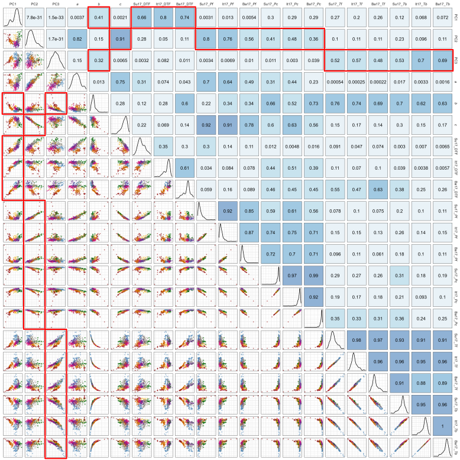
Supplemental Figure 2: Correlations along with the corresponding correlation coefficients (R2) for the first three principal components (PC1, PC2 & PC3) of an analysis of 18 site-years of days from sowing to flower (DTF) data (Wright et al., 2020), coefficients from a photothermal model (a, b & c), DTF, photoperiod sum required for flowering (Pf), nominal base photoperiod (Pc), thermal sum required for flowering (Tf) and nominal base temperature (Tb) in Sutherland, Canada 2017 (SU17), Jessore, Bangladesh 2017 (Ba17) and Metaponto, Italy 2017 (It17). Colors are based on a hierarchical clustering of the PCAs.
Supplemental Figure 3

Supplemental Figure 3: Regional genome-wide association results from 35 Mpb to 50 Mbp on chromosome 2 for selected traits with a lentil diversity panel using MLM, MLMM, FarmCPU and Blink models. Traits include days from sowing to flower (DTF) in Sutherland, Canada 2017 (Su17), with and without the c coefficient used as a covariate (CV=c), DTF in Jessore, Bangladesh 2017 (Ba17), DTF in Bardiya, Nepal 2017 (Ne17), DTF in Metaponto, Italy 2017 (It17), the first principal component (PC1) from a principal component analysis of an analysis of 18 site-years of DTF data, and the b coefficient derived from a photothermal model done by Wright et al. (2020). The vertical line represents a specific base pair location to facilitate comparisons across traits.
Supplemental Figure 4

Supplemental Figure 4: Regional genome-wide association results from 300 Mbp to 315 Mbp on chromosome 6 for selected traits with a lentil diversity panel using MLM, MLMM, FarmCPU and Blink models. Traits include days from sowing to flower (DTF) in Marchouch, Morocco 2016 (Mo16), thermal sum required for flowering (Tf) in Sutherland, Canada 2017 (Su17) and Metaponto, Italy 2017 (It17), nominal base temperature (Tb) in Su17 and It17, and the third principal component (PC3) from a principal component analysis of an analysis of 18 site-years of DTF data (Wright et al., 2020). Vertical lines represent the locations of selected flowering time genes within the associated QTL.
Supplemental Figure 5
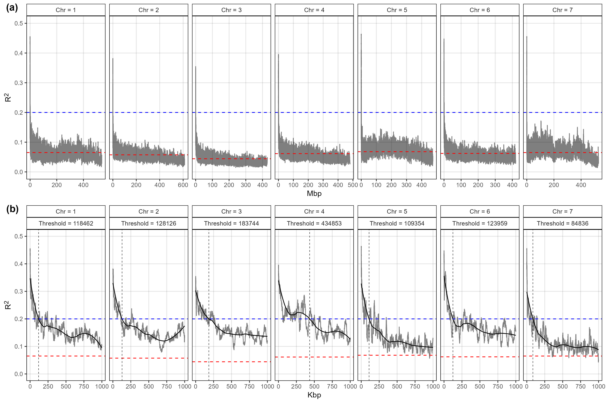
Supplemental Figure 5: Linkage disequilibrium decay across the 7 chromosomes in the lentil genome. (a) Linkage disequilibrium decay for all marker combinations. (b) Linkage disequilibrium decay for marker combinations within a 1 Mbp distance. For each chromosome, 1000 SNP were randomly selected for pairwise LD calculations. Shaded lines represent the moving average of 100 pair-wise marker comparisons. Solid line represents a loess regression used to determine the value (vertical dashed line) in which R2 reaches the 0.2 threshold (blue dashed line). Red dashed lines represent the average R2 for each chromosome.
Supplemental Figure 6
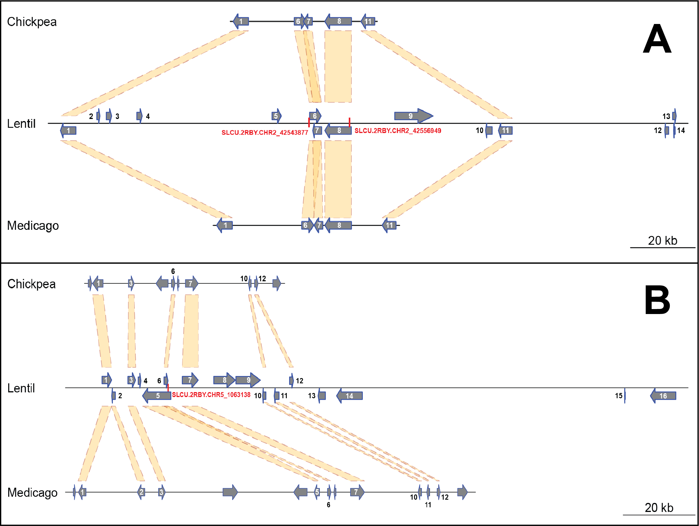
Supplemental Figure 6: Diagram of a 290 kb region of lentil chromosome 2 (A) and a 215 kb region of lentil chromosome 5 (B) containing the relevant SNPs Lcu.2RBY.Chr2p42543877, Lcu.2RBY.Chr2p42556949 and Lcu.2RBY.Chr5p1063138 (highlighted in red). The syntenic regions in chickpea and Medicago genomes are also shown for comparison. The length of the relevant interval for each chromosome was calculated according to the SNP position ± chromosome-specific linkage disequilibrium decay. Numbers over or besides each gene correspond to those shown in Supplemental Table 2.
Supplemental Figure 7
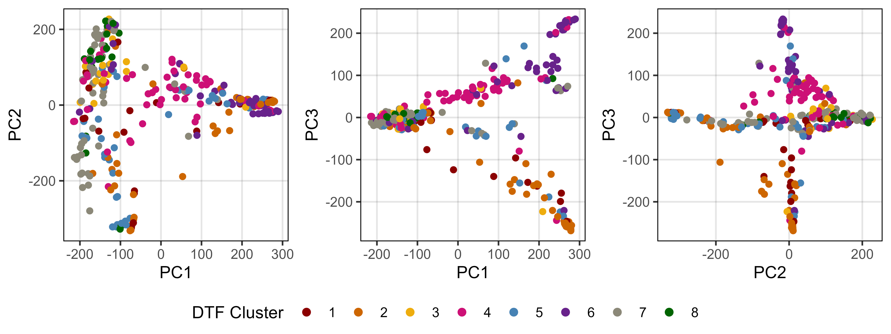
Supplemental Figure 7: Pair-wise plots of a principal component analysis of genetic marker data from a lentil diversity panel. Colors are based on a hierarchical clustering of principal components done by Wright et al. (2020) using 18 site-years of days from sowing to flower data across the three major lentil growing macroenvironments.
Additional Figures
Additional Figure 1
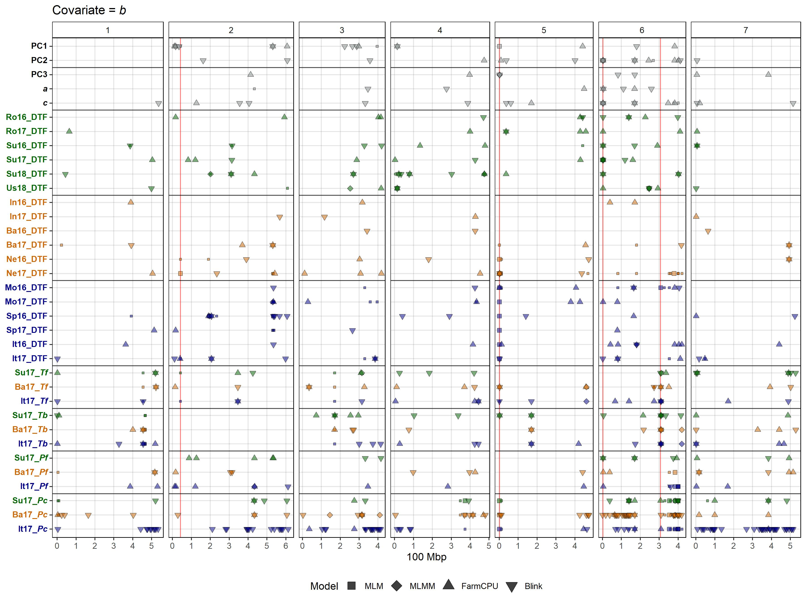
Additional Figure 2
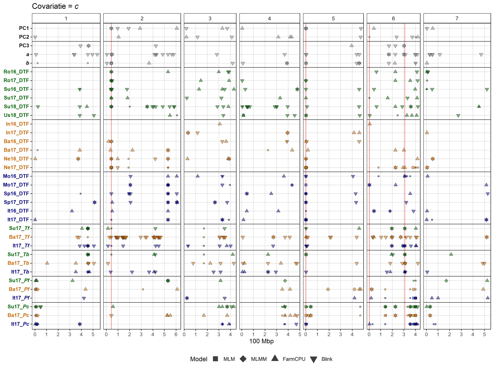
Additional Figure 3

Additional Figure 4
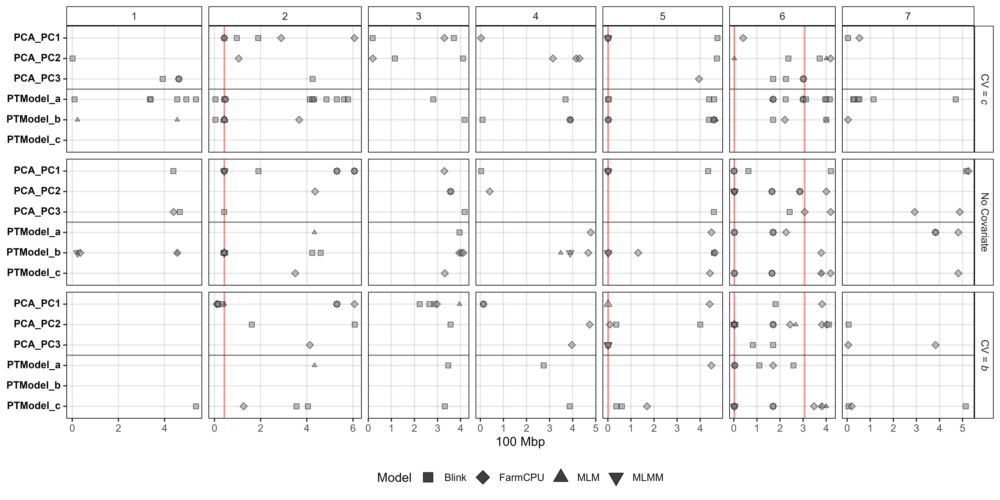
Additional Figure 5


Marker Plots
Additional/Markers/Markers_Chr_1.pdf Additional/Markers/Markers_Chr_2.pdf Additional/Markers/Markers_Chr_3.pdf Additional/Markers/Markers_Chr_4.pdf Additional/Markers/Markers_Chr_5.pdf Additional/Markers/Markers_Chr_6.pdf Additional/Markers/Markers_Chr_7.pdf
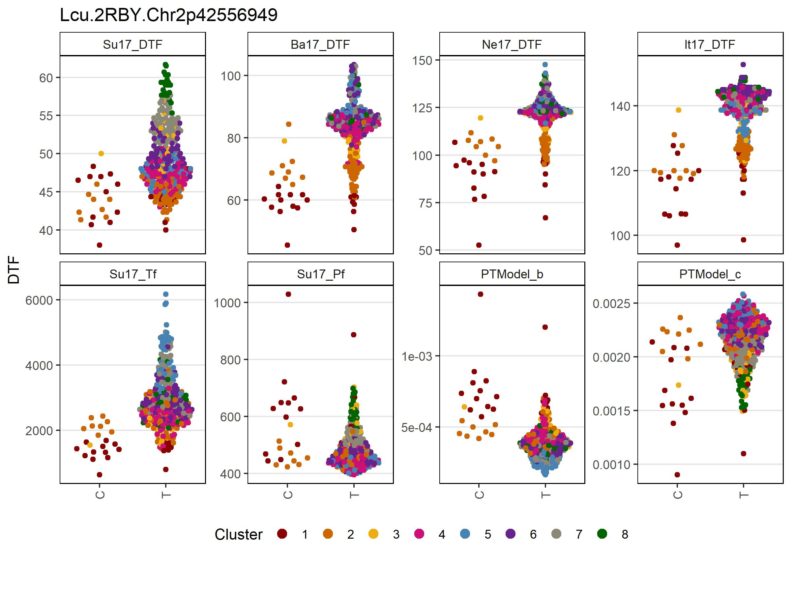


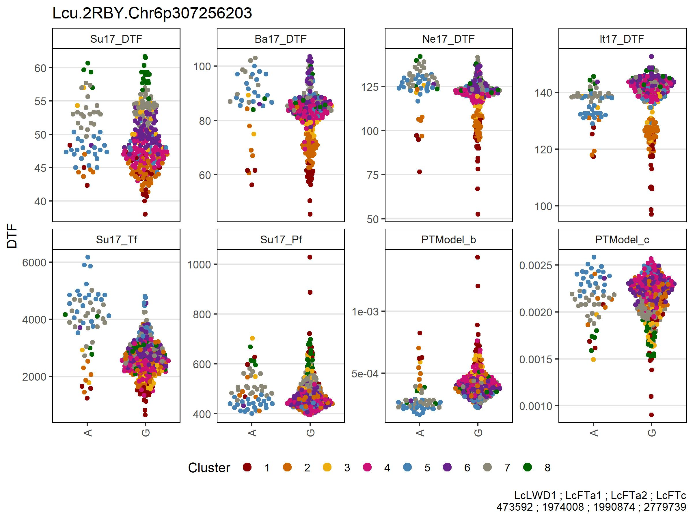
Flowering Time Genes
Additional/LcFTa1.pdf Additional/LcFTb1.pdf Additional/LcELF3a.pdf Additional/LcGI.pdf
© Derek Michael Wright